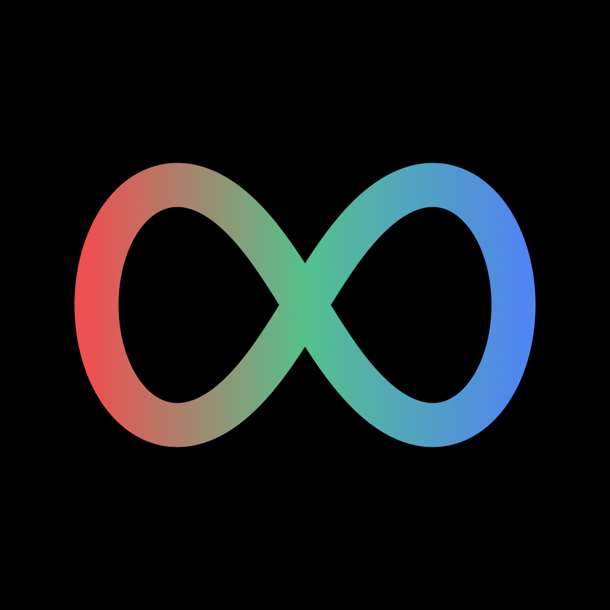

EverNoise
Your sound. All night.
Continuous sound for iPhone and iPad, generated entirely on your device. No recording to loop, no timer, no ads, and no account. No time limit.
Find your balance
Choose Low, Mid, and High independently. Each row has five glass buttons: a hollow circle for Off and four growing dots for intensity. A reflective glass rim shows your selection. The active levels keep the same equal 6 dB steps. New installations start on the third Low button, third Mid button, and second High button, counting Off as the first. Your saved choices are preserved when you update.
The colors follow the sound: muted rose represents lows, sage mids, and periwinkle highs. A large luminous liquid infinity fills the upper screen and combines their color with six rainbow currents weighted by your bands’ power. The default Med animation level keeps the background black. High adds four enormous, faint floating ribbons with the same liquid and soft mist. Color changes blend gradually. Pausing or turning all bands off mutes the colors. Animation freezes when the app is hidden, resumes from the same position, and respects Reduce Motion.
For the original deep brown sound, choose the last Low button and the first Mid and High buttons. Setting all three bands to Off produces silence. Existing Just Brown Noise settings are preserved when you update.
How to use it
Opening the app starts your last selected balance. Changes fade smoothly without restarting playback. Set your volume using your device’s volume buttons. You can lock the screen or switch to another app and keep listening.
To stop, tap the large Pause button in the app, on the lock screen, or in Control Center. Opening the app starts it again.
If the sound stops
iOS can interrupt audio for calls, Siri, or system events. The app resumes automatically when iOS permits. If iOS resets audio, open the app or tap Play to resume. Force-quitting the app, restarting, or turning off your device stops playback.
If headphones or Bluetooth disconnect, playback continues through the available output, which may be the speaker. For overnight use, check your volume and output before locking the screen.
The outline gear opens Settings, privacy information, and help, with a generous touch area around the icon. Avenir Next typography and a muted, balanced palette keep the screen calm. Choose an Animations level: Low keeps a still infinity on black, Med animates only the infinity, and High adds floating background ribbons. Med is the default. Low stops scheduled animation updates. Your choice is remembered and never changes your sound. A previously saved animations-off choice becomes Low.
In Settings, the Audio picker chooses Mono or Stereo. Mono sends the same signal to both ears. Stereo is on by default unless you have saved a different choice. It generates independent left and right noise with the same frequency mix. Switching modes fades smoothly without restarting sound, and your choice is remembered. Use headphones or stereo speakers to hear the separation; a mono output cannot reproduce it.
A calmer view
Native Liquid Glass controls on iOS 26 and thin Avenir Next headings keep controls clear and comfortable. Natural color blending and a translucent rear crossing give the flowing infinity a gentle sense of depth.
Support
Email Eric Niemeyer for help. If something goes wrong, include your iPhone or iPad model, iOS version, and whether you used the speaker, wired headphones, or Bluetooth. Please do not send passwords or other sensitive information.
Requires iOS 17 or later. No purchases or subscriptions.